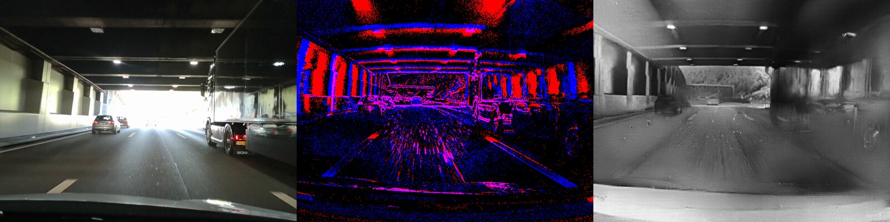
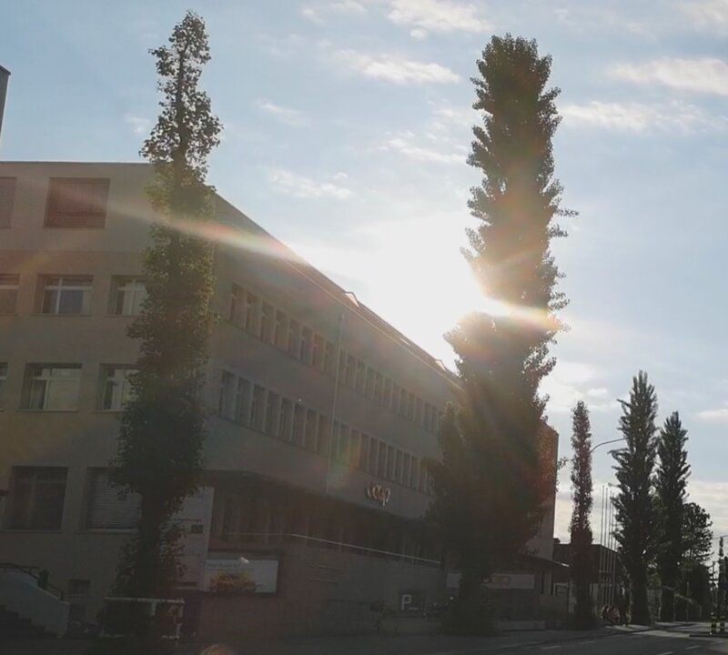
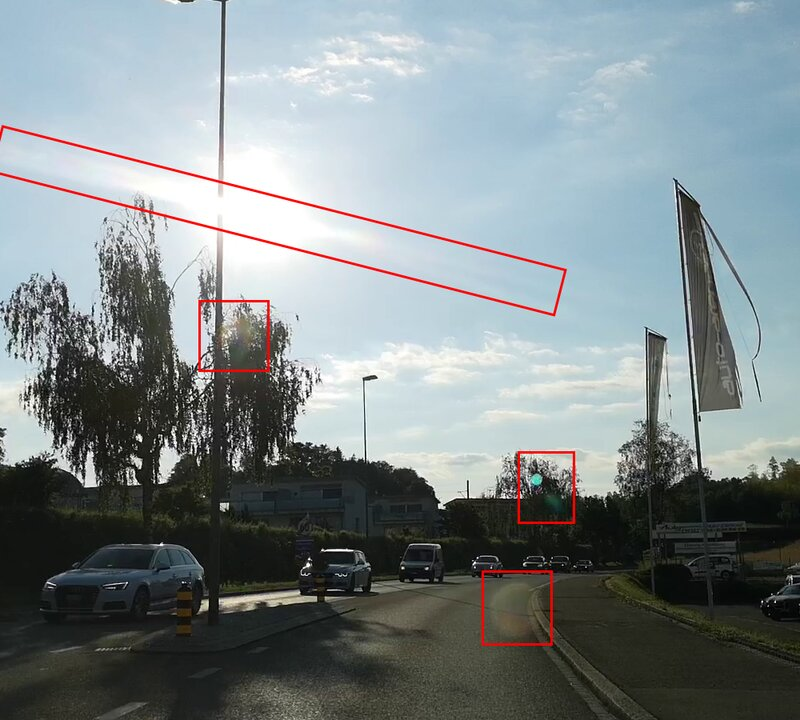
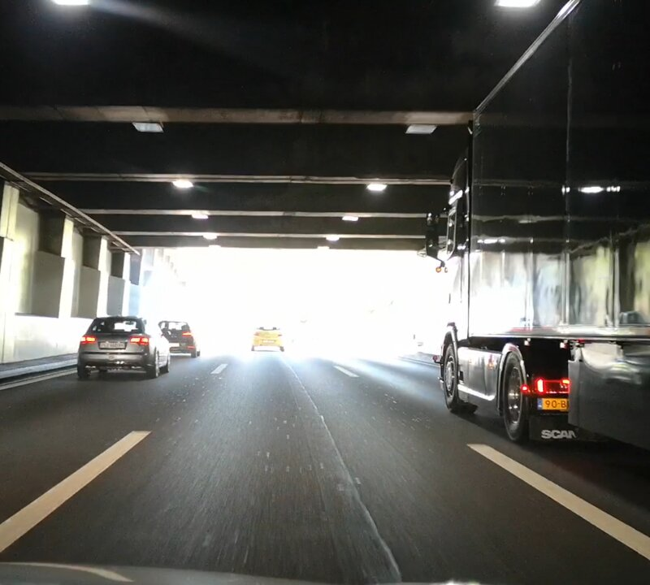
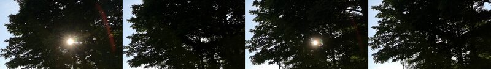
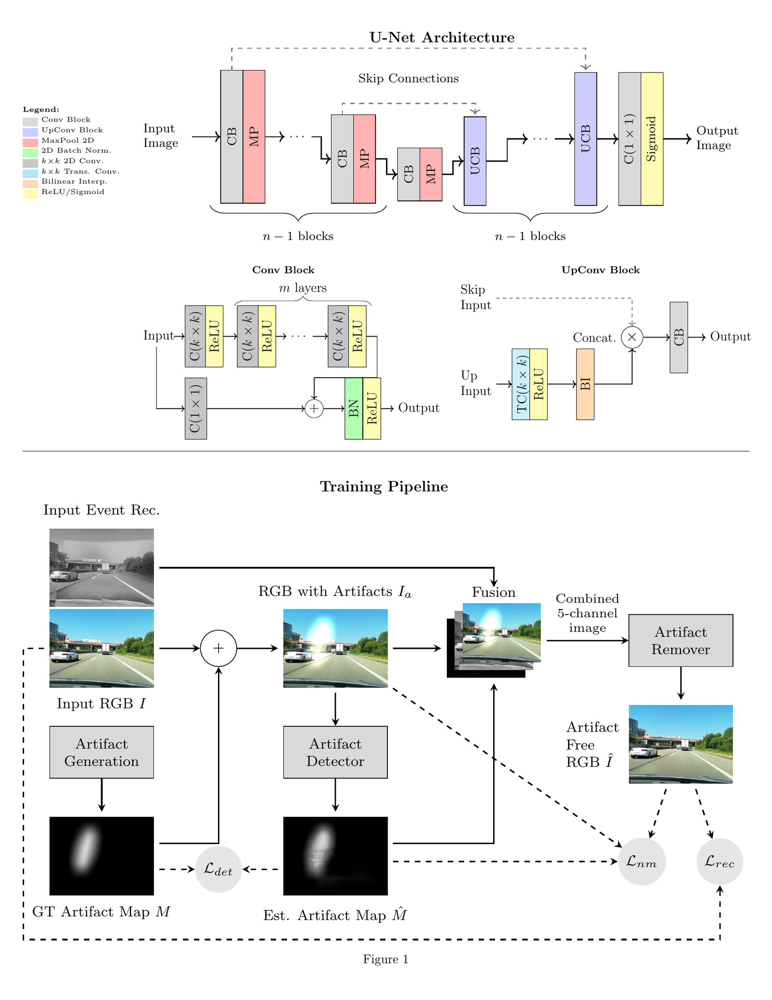
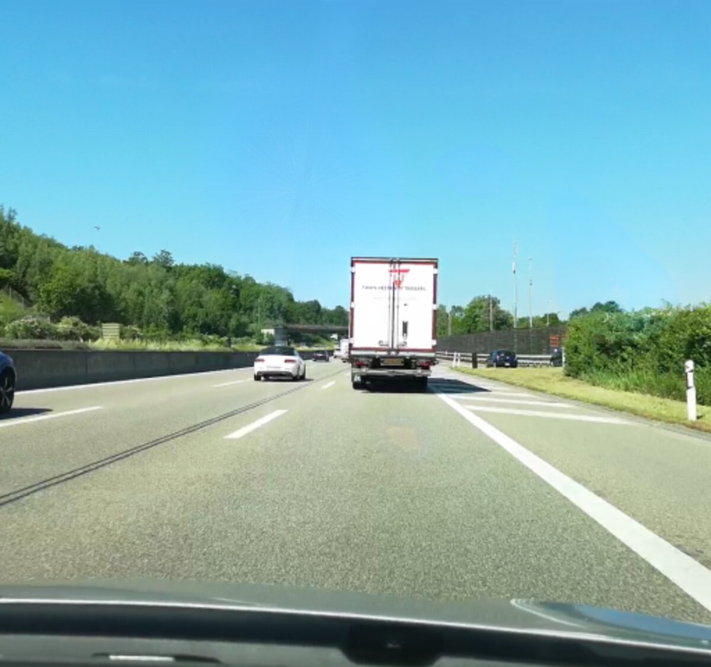

Abstract
Conventional RGB cameras suffer from lighting artifacts such as flare, glare, flicker, and overexposure, leading to irrecoverable information loss that necessitates computational restoration. However, existing approaches treat these problems in isolation, failing to recover structural details completely obscured by complex spatially discrete image degradations.
We propose a novel cross-modal restoration paradigm and present DeLux, a modular proof-of-concept pipeline that leverages neuromorphic event streams as a structural prior to guide the targeted detection and inpainting of lighting artifacts in RGB video. Validation on synthetic benchmarks and real-world automotive footage demonstrates that DeLux effectively suppresses local artifacts and restores affected regions, outperforming RGB-only baselines and event-guided HDR models.
Why event cameras?
When an RGB sensor saturates, the information is permanently lost. Neuromorphic event cameras asynchronously capture brightness changes with microsecond precision and an effective dynamic range exceeding 140 dB, preserving scene structure even in the presence of extreme illumination.


Glare

Lens flare

Overexposure

Flicker
The DeLux pipeline
DeLux explicitly decouples artifact detection from multimodal fusion and image inpainting. It takes a corrupted RGB frame together with a temporally aligned event window, reconstructs a grayscale event video, detects the degraded region, and inpaints only the affected pixels.
Architecture & training
Detector, fusion module, and removal network are trained jointly under a composite objective that balances artifact localization and image reconstruction quality. The event-to-video reconstructor remains frozen.

Results
Drag the slider to compare the corrupted RGB input (left) with the restoration produced by DeLux (right).


Video comparisons
Side-by-side comparisons on real-world automotive recordings. Each video shows the corrupted RGB input on the left and the DeLux restoration on the right.
highway1
sun10
sun11
sun14
Citation
@inproceedings{stachowiak2026delux,
title={DeLux: Cross-Modal Local Artifact Restoration in Video Using Neuromorphic Data},
author={Stachowiak, Bartosz and Brzeziński, Dariusz},
booktitle={European Conference on Computer Vision (ECCV)},
year={2026}
}